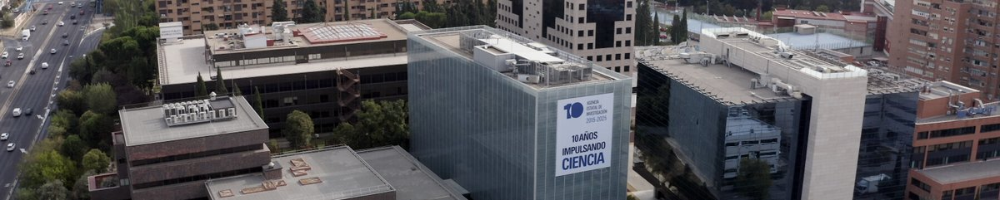

¿Para qué cambia la convocatoria?
Fortalecer la carrera del personal investigador posdoctoral
Las personas investigadoras beneficiarias de las ayudas Ramón y Cajal contarán con los recursos necesarios para liderar un proyecto de investigación propio, consolidando así una trayectoria orientada a su estabilización en el sistema español de ciencia, posicionándolas en una senda de alto potencial, y así favoreciendo su proyección como referentes de liderazgo científico.
Mejorar el posicionamiento internacional de las universidades y los centros de investigación españoles
Las instituciones a las que se incorporen las personas investigadoras beneficiarias contarán con una ayuda vinculada a su estabilización, reforzando así su proyección estratégica en aquellas áreas donde oferten plazas, y asentando trayectorias hacia la excelencia de su actividad científica.
Las 5 grandes novedades

Financiación de un proyecto propio de I+D+i
Cada ayuda Ramón y Cajal incluirá, además de la cofinanciación del salario, la financiación para la ejecución de un proyecto de investigación de 5 años de duración, que será objeto de la evaluación.
- Dotación suficiente para contratar al menos una persona investigadora predoctoral durante 4 años
- No será compatible con la convocatoria PID hasta el cuarto año de ejecución, dado que la ayuda Ramón y Cajal incluye la financiación de un proyecto de investigación
- Costes elegibles similares a los de PID: personal, movilidad, equipamiento, fungibles, publicaciones, congresos y costes indirectos (25%)
- Permite iniciar una línea de investigación y crear un grupo propio desde el primer día
Entrevista en el proceso de evaluación
Se incorpora una entrevista con las comisiones técnicas como parte esencial de la evaluación, alineando el proceso con las mejores prácticas europeas (como el ERC).
Criterios de evaluación:
- Aportaciones científico-técnicas de la persona candidata
- Calidad y novedad de la propuesta de proyecto de investigación
- Impacto científico, económico y social esperado de los resultados
- Grado de independencia y liderazgo
- Viabilidad de la propuesta de proyecto de investigación

Incentivos para participar en convocatorias del ERC
Para las personas investigadoras que durante los tres primeros años de la ayuda RYC presenten una solicitud en las convocatorias del ERC (Starting, Consolidator o Advanced Grants):
- ERC financiada: incremento del 30% en la cofinanciación del salario
- ERC con máxima calificación sin financiación: habilitación como elegible en Europa Excelencia modalidad A + incremento del 10% del salario
- ERC segunda fase sin máxima calificación: habilitación como elegible en Europa Excelencia modalidad B + incremento del 10% del salario
- En solicitudes sucesivas, los incrementos pueden llegar al 20% y 30%
Siempre que la evaluación del informe intermedio sea favorable:
- Se mantiene la ayuda de incentivación
- Se mantiene la ayuda para la realización del proyecto hasta un límite máximo de cinco años desde el inicio de la ayuda RyC
- La cuantía que, dentro del concepto de contratación del/de la IP, no sea ejecutada como consecuencia de la creación del puesto de trabajo de carácter permanente podrá ser trasvasada a la ayuda correspondiente a la ejecución del proyecto
Estabilización obligatoria con incentivo económico
La creación de un puesto de trabajo permanente en el área de la persona beneficiaria será un requisito obligatorio para cumplir con la ejecución de la ayuda.
- Ayuda a la entidad beneficiaria para la creación de una plaza permanente
- Si el puesto se crea antes de finalizar la ayuda, las cantidades de cofinanciación del salario pueden trasvasarse al proyecto
- La ayuda para la creación del puesto se mantiene hasta su efectiva creación

Integración y simplificación de convocatorias
Las modificaciones permiten una simplificación del panorama de ayudas de la AEI:
- Se suprime la convocatoria de Consolidación Investigadora, cuyos objetivos quedan cubiertos por la nueva RYC
- Desaparece la ayuda específica de atracción de talento (ya incluida en la financiación del proyecto)
- Se incrementa la dotación de las ayudas en la convocatoria de Europa Excelencia
- Se otorgará el certificado R3 de Investigador como investigador/a establecido/a para aquellas personas que obtengan la ayuda
Presentación en vídeo
Presentación oficial de las novedades del programa Ramón y Cajal para la convocatoria 2026:
¿Qué implica para las personas candidatas?
Propuesta científica sólida
Los criterios de evaluación incorporan la valoración de la propuesta científica, esto exige presentar un proyecto de investigación novedoso, ambicioso, viable y con impacto.
Liderazgo e independencia
La persona beneficiaria RYC se convierte en IP desde el inicio.
Visión europea
Los incentivos para el ERC premian la ambición internacional. Preparar una solicitud al ERC durante los tres primeros años es una oportunidad estratégica.
Estabilidad garantizada
La obligatoriedad de crear un puesto permanente refuerza el compromiso de las instituciones con la carrera de la persona investigadora.